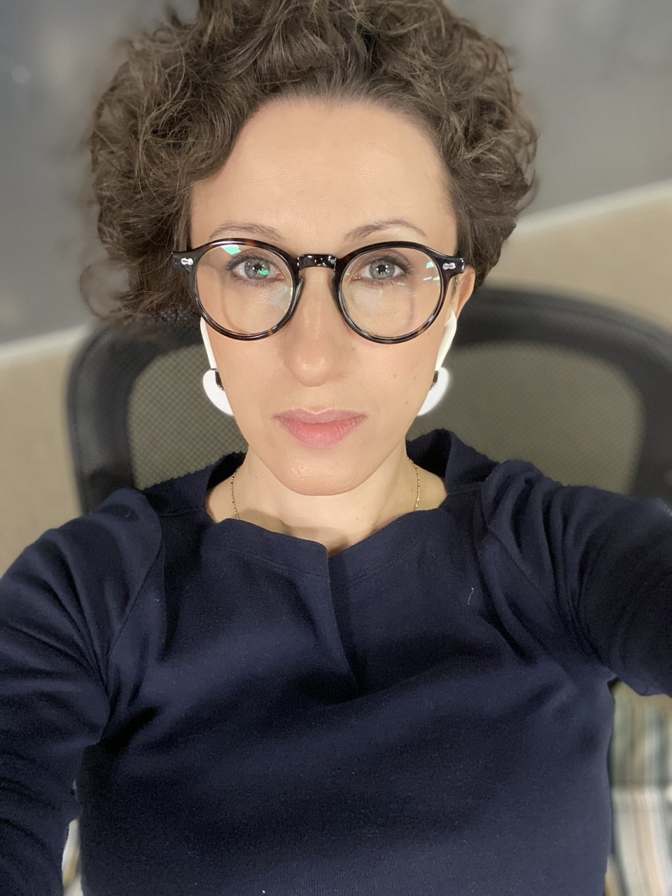

Продуктовая стратегия
Исследую рынок и аудиторию. Разрабатываю позиционирование, ценностное предложение, упаковку продукта и стратегию выхода на рынок.
B2B IT · SaaS · MarTech
Head of Marketing
Product Marketing Lead
Работаю на стыке продукта,
маркетинга и продаж.
Выстраиваю маркетинг сложных технологических продуктов: стратегия, позиционирование, выход на рынок и поддержка продаж.

Компании и проекты
01 / Профессиональный фокус
Исследую рынок и аудиторию. Разрабатываю позиционирование, ценностное предложение, упаковку продукта и стратегию выхода на рынок.
Управляю командой, бюджетом и каналами продвижения для достижения целей бизнеса.
Создаю коммерческие материалы, обучаю сотрудников отдела продаж и партнёров. Развиваю экспертные и отраслевые коммуникации.
Использую ИИ для исследований, аналитики и автоматизации рутинных задач.
В сложном B2B-бизнесе между вложениями в привлечение и прибылью — длинная цепочка:
На неё влияют качество привлечения, работа продаж, бюджет клиента и готовность продукта. Скидки, стоимость внедрения, доработок и поддержки определяют маржу. Продления, допродажи и удержание — прибыль за весь срок сотрудничества.
Посчитать окупаемость привлечения можно. Выделить вклад маркетинга — отдельная задача. Длинный цикл сделки требует связать сегодняшние затраты с будущими результатами. Расчёт ROMI требует определить, какую прибыль относить к маркетингу и как распределять вклад касаний. Эти допущения влияют на итоговый процент.
Источник лида в CRM фиксирует канал привлечения. Он не доказывает, какая доля роста прибыли обеспечена маркетингом.
Поиск сегментов с потребностью, бюджетом и потенциалом роста.
Причины выбрать продукт среди альтернатив.
Проверка спроса и каналов привлечения первых клиентов.
Развитие интереса целевых клиентов и потока квалифицированных обращений.
Аргументы и материалы, которые помогают повышать конверсию из интереса в сделку.
Обучение, проверка знаний и документация, которые помогают команде уверенно продавать сложный продукт и быстрее вводить новых сотрудников.
Ниже — конкретные проекты и мой вклад в общий результат.
03 / Опыт и ключевые проекты
От продуктового маркетинга и подготовки продаж — до запуска агентств и развития профессионального сообщества.
Head of Marketing · MarTech · ML · B2B SaaS
Управляла маркетингом продуктового портфеля платформы идентификации анонимных пользователей Reffection и go-to-market платформы речевой аналитики Dialogica. Стратегия, GTM, бюджет, подрядчики и каналы; совместная работа с продажами над качеством лидов и конверсией воронки.
Создала систему онбординга, обучения и аттестации на основе продуктовой документации и конкурентной аргументации. Участвовала в создании вики для сотрудников. Разработала гайд по расчёту экономического эффекта и презентации под конкретных клиентов.
Искала перспективные отрасли, привлекала партнёров через ABM и инициировала пилоты для проверки применимости и коммерческого потенциала продуктов, в том числе в сегменте интернет-сервисов.
Участвовала в создании и запуске ML-платформы: позиционирование, ценностное предложение, маркетинговая и коммерческая упаковка, документация и материалы для продаж. Защитила бренд Dialogica в Сколково и зарегистрировала товарный знак.
Организовала партнёрские и бартерные мероприятия с существенной экономией бюджета (включая бартерное выступление на EDTech-форуме в Сколково и собственную секцию на Optimization без бюджета, вошедшую в топ-5 лучших секций конференции 2025 года). За один сезон совместно с коммерческой командой привлекли более 100 квалифицированных лидов в пайплайн; часть довели до сделок.
Head of PR & Marketing · Агентство полного цикла
Развивала маркетинг агентства: коммуникационная стратегия, позиционирование, упаковка услуг и продвижение экспертизы.
Переупаковала услугу управления репутацией: сформулировала понятное предложение и усилила коммерческую подачу сервиса.
Объединила проекты команды — от разработки сайта и аналитики до SEO и рекламы — в комплексную стратегию, определив роль каждого направления на этапах клиентской воронки. Этот подход стал стандартом формирования комплексных предложений агентства. Стратегия получила золото Tagline Awards.
Бренд-директор · Запуск нового агентства
Отвечала за go-to-market и бренд-стратегию Glider: от продуктовой модели до системы коммуникаций и коммерческой упаковки.
Совместно с фаундером определила продуктовую модель, позиционирование и конкурентные преимущества. Создала архитектуру услуг, ценностное предложение, структуру и содержание сайта, материалы для продаж и контентную стратегию.
Сформулировала взгляд агентства на развитие контент-маркетинга, ключевые идеи, сообщения и конкурентные преимущества.
Адаптировала ценностное предложение и ключевые сообщения второго бизнеса основателя для зарубежной аудитории. На этой основе разработали сайт для выхода на международный рынок.
PR-директор · Нейромаркетинг · Психографика · AI
Создала направление индустриального PR и развивала экспертное позиционирование сложных технологических продуктов.
Подготовила программные публикации для AdIndex, РБК Pro, «Банковского обозрения» и Rusbase. Организовала секцию Psycho-Data на РИФ 2020.
Участвовала в подготовке коммерческого запуска AI-продукта Psychograph.
Разработала трек экспертных материалов и вебинаров о влиянии COVID-19 на потребительское поведение и бизнес.
Стратегический проект
Участие в разработке продуктовой концепции и стратегии роста.
Участвовала в разработке концепции роста: цифровая модель современной женщины, исследования аудитории, CJM и инвестиционная логика.
Marketing Communications · & New Business Manager
Позиционирование, продуктовая упаковка, PR и new business агентств холдинга.
Сформировала продуктовую линейку и ценностное предложение CRM-агентства NBRIEF. Участвовала в запуске LETO: позиционирование, коммуникационная платформа и формирование управленческой команды.
Разработала коммуникационную концепцию, участвовала в обновлении позиционирования и PR-стратегии. Агентство вошло в топ-3 исследования РАМУ и заняло 1-е место в категории Digital.
Разработала сценарий представления кейса и презентационные материалы для конкурсных подач, включая Young Lions Competitions в рамках Cannes Lions. Проект получил призы «Серебряного Меркурия» и фестиваля «Идея».
PR-директор · Автоматизация продаж
Отвечала за позиционирование нового бренда и коммуникационную стратегию продукта.
Сформировала коммуникационную платформу amoCRM и участвовала в позиционировании продукта через идею консюмеризации корпоративного ПО: удобный инструмент для сотрудников вместо громоздких ERP-систем.
Помогала разграничить CRM-маркетинг и CRM как систему управления лидами и продажами. Сформулировала сообщения, объяснявшие задачи amoCRM и её ценность для бизнеса.
Marketing Communications Manager
С нуля сформировала PR-направление агентства веб-разработки и интеграции. Позиционирование, упаковка экспертизы и публичные коммуникации владельца.
Запустила в Republic визионерскую колонку основателя ADV Алексея Персианова о будущем маркетинга: готовила тексты на основе его идей и бесед с ним.
Организовала секции агентства на ключевых отраслевых мероприятиях.
Исполнительный секретарь, пресс-менеджер
Обеспечивала работу первого Совета Ассоциации, коммуникации с руководителями агентств и публичное представление инициатив профессионального сообщества.
Совместно с Russia.ru запустила Digital Faces — фильм, в котором руководители Совета АИА представили свои взгляды на развитие digital-маркетинга и ключевые идеи, определявшие становление рынка.
Организовала ежемесячные «диспут-пати» — digital-баттлы АИА с участием ключевых игроков рынка.
Организовала отраслевую конференцию в рамках ММФР и секцию Ассоциации на РИФ+КИБ.
Менеджер по работе со СМИ
Развивала направление New Media у одного из «пионеров» контекстной рекламы.
Организовала в рамках конференции eTarget пресс-конференцию с ключевыми представителями рынка контекстной рекламы, включая Яндекс и «Бегун», и журналистами ведущих деловых изданий.
Инициировала тематический выпуск Business Guide издательского дома «Коммерсант» с главной темой о контекстной рекламе и Алексеем Басовым как персоной номера.
PR-менеджер
Продвижение веб-разработки и интернет-интеграции: клиентские кейсы, технологические решения, выступления руководителей, партнёрские мероприятия.
Выстраивала позиционирование QSOFT как одного из ключевых партнёров «Битрикс», поддерживала коммуникации с вендором и участвовала в совместных мероприятиях. В продвижении использовала крупные проекты агентства на этой CMS, включая сайт «Эльдорадо».
Организовала на первой Russian Internet Week секцию с основателями крупнейших CMS и представителями ведущих агентств-интеграторов. Модератором дискуссии выступил основатель и генеральный директор QSOFT Михаил Токовинин.
Media Relations Manager
Маркетинговое продвижение агентства: контент, сайт, медиапланирование, партнёрства и digital-реклама.
Обеспечила маркетинговое продвижение конференции CMS.
Запустила репортаж о тайном покупателе совместно с телеканалом СТС.
04 / Консультации
Для основателей, руководителей и команд B2B IT, SaaS и digital-бизнеса.
Обсудить задачу в TelegramОтличие продукта от альтернатив, ценностное предложение и ключевые сообщения. Как выразить их на сайте и в коммерческих материалах.
Оценка нового сегмента, гипотезы спроса и барьеры входа. Подготовка продукта к запуску и план проверки рыночных гипотез.
Анализ рынка, аудитории и конкурентов в контексте целей бизнеса. Выбор направлений роста, конкурентных преимуществ и приоритетов развития продуктового предложения.
05 / Рекомендации
Андрей ТереховCEO и основатель RUWARD,
управляющий партнёр Cossa
Лев ОвчинниковCEO Reffection
Образование и языки
Историко-филологический факультет
Филолог · 2004
Английский — B2
06 / Контакты
Обсудим роль в вашей команде
или задачу для консультации.